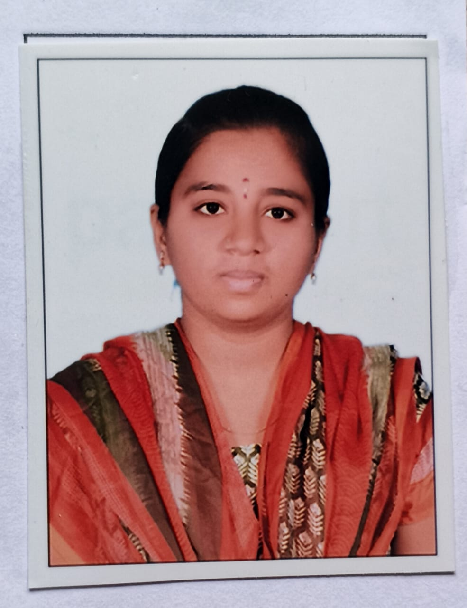

KANCHAM REDDY JAHNAVI REDDY
 Email:kanchamjahnavi10@gmail.com Mobile:+91 8886777021
PROFESSIONAL SUMMARY
Recent AI/ML graduate with a solid background in python programming and a strong passion for software development. Enthusiastic about applying technical skills and gaining hands-on experience in a professional setting. Highly motivated, detail-oriented, and eager to contribute effectively to a dynamic team
EDUCATION
KSRM COLLEGE OF ENGINEERING - B.TECH in Computer Science(AI & ML)
Dec 2021 - June 2025 | GPA: 8.55 | Andhra Pradesh,India
Narayana Junior College - Intermediate(MPC)
June 2019 - August 2021 | Marks:795/1000 | Andhra Pradesh,India
S.V.E.M High School - SSC
August 2018 - March 2019 | GPA: 9.3 | Andhra Pradesh,India
TECHNICAL SKILLS
Languages:PYTHON,HTML,SQL
Platforms:Visual Studio Code,SQL*plus
SoftSkills:Problem-solving Skills,Communication,Teamwork
PROJECT
College Virtue Assist
- Developed College VirtuAssist, an AI-powered college chatbot using Word2Vec for intelligent query handling.
- Implemented NLP techniques including tokenization, stopword removal, and word embeddings for accurate response generation.
- Built and integrated a full-stack solution using Python (Flask), Firebase, and a web-based frontend for 24/7 access.
- Achieved improved user engagement and satisfaction by reducing response time and enhancing contextual understanding.
CERTIFICATIONS
IBM Certified: Introduction to Python
- Gained hands-on experience in Python programming.
- Implemented basic object-oriented programming (OOP) concepts in Python.
IBM Certified: RDBMS
- Learned to design, create, and manage databases using SQL.
- Developed hands-on experience with writing complex SQL queries, joins, and subqueries.